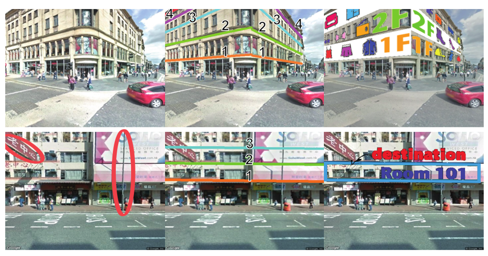

Left column shows two example street-view images in London (top)
and Hong Kong (bottom), where the camera views are side- and front-facing
relative to the building, respectively. Note the occlusions introduced by the
advertisement billboard and light post circled in red on bottom left. Middle
column shows floor-level lines recognized by our method with geometric
positions and semantic order labels. Right column shows potential floor-aware
image-overlay results to aid shopping (top) and navigation (bottom).
|